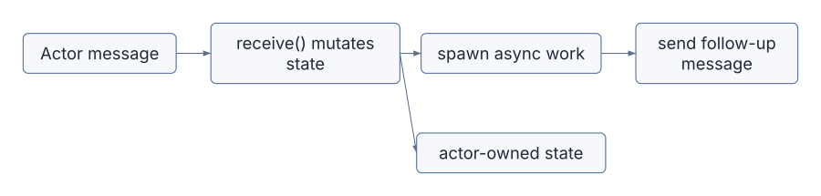
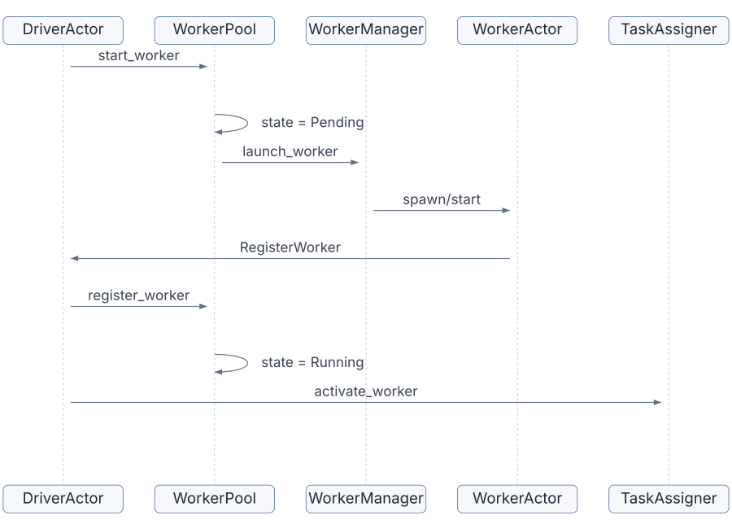
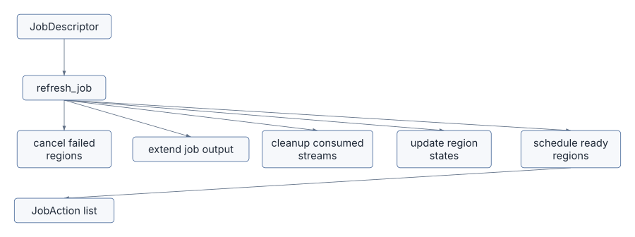
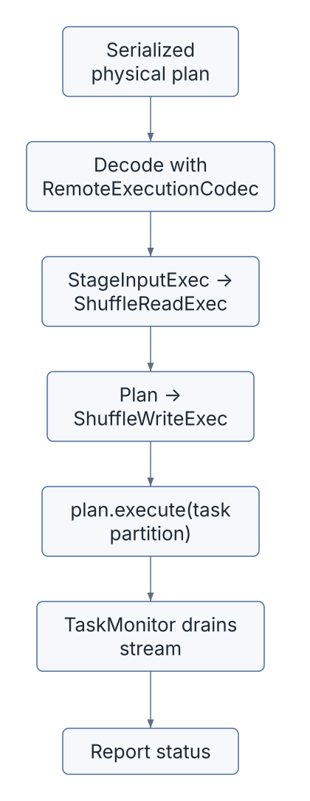
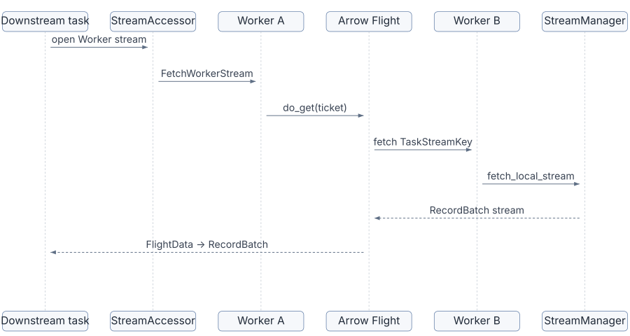
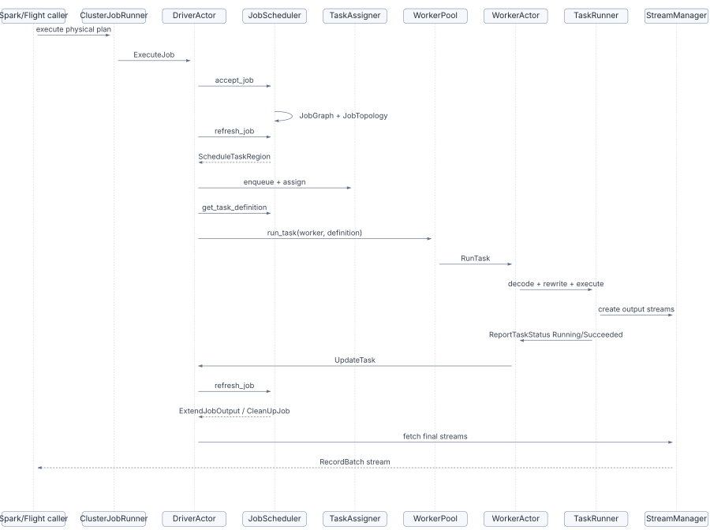

Chapter 7 explained how Sail turns a DataFusion physical plan into a distributed job graph. This chapter follows that graph into motion.
The job graph says what should run:
The driver, workers, task assigner, task runner, and stream managers decide how that work actually happens.
If Chapter 7 was the map, Chapter 8 is the traffic system.
| Area | Files | Role |
|---|---|---|
| Actor runtime | crates/sail-server/src/actor.rs |
Small async actor system used by the driver and workers |
| Driver actor | crates/sail-execution/src/driver/actor/*.rs |
Accepts jobs, workers, task updates, stream requests, and shutdown |
| Driver events | crates/sail-execution/src/driver/event.rs |
Message protocol for the driver actor |
| Worker actor | crates/sail-execution/src/worker/actor/*.rs |
Registers with driver, receives tasks, reports status, serves/fetches streams |
| Worker events | crates/sail-execution/src/worker/event.rs |
Message protocol for worker actor |
| Worker pool | crates/sail-execution/src/driver/worker_pool/*.rs |
Launches, registers, monitors, and talks to workers |
| Task assigner | crates/sail-execution/src/driver/task_assigner/*.rs |
Maps task regions to driver or worker task slots |
| Job scheduler | crates/sail-execution/src/driver/job_scheduler/*.rs |
Tracks job state, creates attempts, schedules regions, builds task definitions |
| Task runner | crates/sail-execution/src/task_runner/*.rs |
Executes serialized DataFusion physical plans on driver or worker |
| Stream manager | crates/sail-execution/src/stream_manager/*.rs |
Owns local task streams and pending stream fetches |
| Stream accessor | crates/sail-execution/src/stream_accessor/core.rs |
Implements task stream reader/writer by sending actor messages |
| Stream service | crates/sail-execution/src/stream_service/*.rs |
Uses Arrow Flight to fetch task streams across processes |
| Worker managers | crates/sail-execution/src/worker_manager/*.rs |
Launches local or Kubernetes workers |
The chapter will follow a single distributed query from the moment the cluster runner sends it to the driver until final Arrow batches are returned.
Sail’s driver and workers are actors. The actor runtime lives in
crates/sail-server/src/actor.rs.
The trait is small:
pub trait Actor: Sized + Send + 'static {
type Message: Send + SpanAssociation + 'static;
type Options;
fn name() -> &'static str;
fn new(options: Self::Options) -> Self;
async fn start(&mut self, ctx: &mut ActorContext<Self>) {}
fn receive(&mut self, ctx: &mut ActorContext<Self>, message: Self::Message) -> ActorAction;
async fn stop(self, ctx: &mut ActorContext<Self>) {}
}Messages are processed sequentially:
while let Some(MessageEnvelop { message, context }) = self.receiver.recv().await {
let action = self.actor.receive(&mut self.ctx, message);
...
self.ctx.reap();
}That gives actor state a simple programming model: the actor mutates its own fields without locks because only one message is handled at a time.
But the actor must not block. The trait comment says blocking work
should be spawned through ActorContext::spawn. That pattern
appears everywhere in driver and worker code:
The actor system gives Sail a clean split:
receive,
This is the control-plane style behind Sail’s distributed runtime.
DriverActor is defined across
crates/sail-execution/src/driver/actor.
Its new method constructs the major driver
subsystems:
let worker_pool = WorkerPool::new(...);
let job_scheduler = JobScheduler::new(...);
let task_assigner = TaskAssigner::new(...);
let stream_manager = StreamManager::new(...);The driver owns:
WorkerPool: worker lifecycle and worker RPC
clients,JobScheduler: jobs, stages, regions, tasks,
attempts,TaskAssigner: task slots and stream ownership,TaskRunner: local driver task execution,StreamManager: local streams owned by the driver,task_sequences: latest worker task status sequence
numbers,The driver starts a gRPC server in start:
self.server = server
.start(Self::serve(ctx.handle().clone(), addr).in_span(span))
.await;Once the server is ready, it starts the initial workers:
for _ in 0..self.options.worker_initial_count {
self.worker_pool.start_worker(ctx);
}The driver receives events such as:
RegisterWorkerWorkerHeartbeatExecuteJobUpdateTaskCreateLocalStreamFetchWorkerStreamCleanUpJobShutdownThat event list is effectively the driver’s public control-plane API.
WorkerActor has a similar shape in
crates/sail-execution/src/worker/actor.
Its new method constructs:
When the worker server becomes ready, the worker registers with the driver:
client.register_worker(worker_id, host, port).awaitThen it starts heartbeats:
loop {
tokio::time::sleep(interval).await;
client.report_worker_heartbeat(worker_id).await;
}The worker receives events such as:
RunTaskStopTaskReportTaskStatusCreateLocalStreamFetchWorkerStreamCleanUpJobShutdownThe most important handler is handle_run_task:
self.peer_tracker.track(ctx, peers);
self.task_runner
.run_task(ctx, key, definition, self.options.session.task_ctx());The worker learns about peer workers from the driver, remembers their
locations, and runs the task with its own TaskContext.
The worker lifecycle starts in the driver
WorkerPool.
start_worker:
WorkerId.WorkerDescriptor in Pending
state.WorkerManager to launch the
worker.The launch options include:
For local cluster mode, LocalWorkerManager spawns a
WorkerActor in a local actor system:
let options = WorkerOptions::local(id, options, self.runtime.clone(), self.session.clone());
let handle = state.system.spawn(options);
state.workers.insert(id, handle);For Kubernetes mode, the worker manager uses the Kubernetes worker
manager implementation. The driver side does not care which launch
strategy is used; it just waits for a RegisterWorker
event.
When registration arrives:
worker.state = WorkerState::Running {
host,
port,
updated_at: Instant::now(),
heartbeat_at: Instant::now(),
client: None,
};Then the driver schedules:

Workers send heartbeats to the driver. The driver records the latest heartbeat:
if let WorkerState::Running { heartbeat_at, .. } = &mut worker.state {
*heartbeat_at = Instant::now();
Self::schedule_lost_worker_probe(ctx, worker_id, worker, &self.options);
}If the lost-worker probe fires and the heartbeat is stale, the driver:
The handler in driver/actor/handler.rs makes that
explicit:
let keys = self.task_assigner.find_worker_tasks(worker_id);
self.task_assigner.deactivate_worker(worker_id);
for key in keys.iter() {
self.job_scheduler.update_task(
key,
TaskState::Failed,
Some(message.clone()),
Some(CommonErrorCause::Execution(message.clone())),
);
}This is the retry story at the worker level. Worker loss becomes task attempt failure. Task attempt failure becomes region rescheduling unless the maximum attempt count is exceeded.
The job scheduler accepts a job in
crates/sail-execution/src/driver/job_scheduler/core.rs:
let graph = JobGraph::try_new(plan)?;
let (output, stream) = build_job_output(ctx, job_id, graph.schema().clone());
let descriptor = JobDescriptor::try_new(graph, JobState::Running { output, context })?;
self.jobs.insert(job_id, descriptor);After acceptance, the driver calls refresh_job.
refresh_job is the scheduler’s main decision function.
Its comment lists the steps:
The important point is that the scheduler does not immediately schedule every task. It schedules task regions when dependencies allow them.

The driver then executes the returned JobAction
values.
Each stage has tasks. Each task can have multiple attempts:
pub struct TaskDescriptor {
pub attempts: Vec<TaskAttemptDescriptor>,
}An attempt has:
job_output_fetched,When a task region becomes schedulable, the scheduler pushes a new attempt for each task:
attempts.push(TaskAttemptDescriptor {
state: TaskState::Created,
messages: vec![],
cause: None,
job_output_fetched: false,
created_at: Utc::now(),
stopped_at: None,
});Task states are:
CreatedScheduledRunningSucceededFailedCanceledThe driver receives status updates from workers as
DriverEvent::UpdateTask. Those updates include an optional
sequence number. The driver ignores stale updates:
if sequence <= *s {
warn!("{} sequence {sequence} is stale", TaskKeyDisplay(&key));
return ActorAction::Continue;
}This protects the control plane from delayed or duplicate worker status messages.
Task regions are important because Sail schedules and retries them as units. If any task in a region fails, the scheduler cancels other active attempts in that region:
if failed {
for t in ®ion.tasks {
for (a, attempt) in task.attempts.iter_mut().enumerate() {
if !attempt.state.is_terminal() {
attempt.state = TaskState::Canceled;
actions.push(JobAction::CancelTask { key });
}
}
}
}Why cancel the whole region?
Because a region represents a group of tasks that are pipelined or otherwise scheduled together. If one attempt fails, its peers may be producing or consuming streams that are no longer valid for that attempt set. Canceling the region keeps attempt boundaries consistent.
This is the distributed version of “do not mix outputs from different attempts unless the system has explicitly decided to do so.”
The scheduler emits JobAction::ScheduleTaskRegion. The
driver gives the region to TaskAssigner:
self.task_assigner.enqueue_tasks(region);Then run_tasks asks for assignments:
let assignments = self.task_assigner.assign_tasks();
self.task_assigner.track_streams(&assignments);TaskAssigner tracks:
Worker task slots are limited:
task_slots: vec![TaskSlot::default(); self.options.worker_task_slots]Driver task slots can grow:
/// The number of task slot can grow indefinitely.
task_slots: Vec<TaskSlot>Assignment is region-aware.
TaskSlotAssigner::try_assign_task_region only succeeds if
the entire region can be assigned:
for (placement, set) in ®ion.tasks {
match placement {
TaskPlacement::Driver => ...
TaskPlacement::Worker => {
if let Some((worker_id, slot)) = self.next() {
...
} else {
return Err(region);
}
}
}
}If a region cannot fit, it goes back to the front of the queue. This can cause head-of-line blocking, but it preserves scheduling order.
The task assigner also tells the driver how many workers to request:
let required_slots = enqueued_slots.saturating_sub(vacant_slots);
let required_workers = required_slots
.div_ceil(self.options.worker_task_slots)
.min(allowed_workers);The driver then starts that many workers:
for _ in 0..self.task_assigner.request_workers() {
self.worker_pool.start_worker(ctx);
}This is simple elastic scheduling:
worker_max_count caps the result if configured.After assignment, the driver asks the scheduler for each task definition:
let (definition, context) =
self.job_scheduler.get_task_definition(&entry.key, &self.task_assigner)?;A TaskDefinition contains:
pub struct TaskDefinition {
pub plan: Arc<[u8]>,
pub inputs: Vec<TaskInput>,
pub output: TaskOutput,
}The plan is serialized with DataFusion’s physical plan protobuf support and Sail’s extension codec:
let plan =
PhysicalPlanNode::try_from_physical_plan(stage.plan.clone(), self.codec.as_ref())?
.encode_to_vec();Inputs come from stage.inputs, using
InputMode and current task assignments to decide
locations.
For pipelined worker outputs, input keys become:
TaskInputLocator::Worker {
stage: input.stage,
keys,
}Each key includes:
The task output includes:
This object is the portable description of one task attempt.
Once the driver has a TaskDefinition, it dispatches by
placement:
match assignment.assignment {
TaskAssignment::Driver => self.task_runner.run_task(ctx, entry.key, definition, context),
TaskAssignment::Worker { worker_id, slot: _ } => {
self.worker_pool.run_task(ctx, worker_id, entry.key, definition)
}
}For worker tasks, WorkerPool::run_task:
The peer list is optimized by remembering known peers:
let peers = running_workers
.into_iter()
.filter(|x| !worker.peers.contains(&x.worker_id))
.collect();Workers report back which peers they now know, so the driver avoids sending the same location information repeatedly.
The worker receives WorkerEvent::RunTask, tracks peer
locations, and calls TaskRunner::run_task.
TaskRunner::execute_plan performs the critical
preparation:
let plan = PhysicalPlanNode::decode(definition.plan.as_ref())?;
let plan = plan.try_into_physical_plan(&context, self.codec.as_ref())?;
let plan = self.rewrite_parquet_adapters(plan)?;
let plan = self.rewrite_shuffle(ctx, key, &definition.inputs, &definition.output, plan, &context)?;
let stream = plan.execute(key.partition, context)?;There are two important rewrites:
rewrite_parquet_adapters adjusts Parquet scans for
Delta expression adapters.rewrite_shuffle turns stage input placeholders into
reads, and wraps the task output in writes.Then DataFusion executes the task partition.

TaskRunner::run_task does not simply call
execute and report success. It spawns a
TaskMonitor.
The monitor first reports Running:
T::Message::report_task_status(key, TaskStatus::Running, None, None)Then it races execution against cancellation:
tokio::select! {
x = Self::execute(key.clone(), stream) => x,
x = Self::cancel(key.clone(), signal) => x,
}execute drains the stream:
while let Some(batch) = stream.next().await {
if let Err(e) = batch {
return Failed;
}
}
return Succeeded;This matters because in DataFusion, executing a plan returns a stream. Work may not happen until the stream is polled. If Sail reported success immediately after obtaining the stream, it would be lying. Draining the stream ensures the task really ran and all shuffle writes were closed.
StreamAccessor bridges physical operators and actor
messages.
It implements TaskStreamReader:
async fn open(&self, location: &TaskReadLocation, schema: SchemaRef)
-> Result<TaskStreamSource>For each read location, it sends an actor event:
TaskReadLocation::Driver { key } =>
fetch_driver_stream(key, schema, tx)
TaskReadLocation::Worker { worker_id, key } =>
fetch_worker_stream(worker_id, key, schema, tx)
TaskReadLocation::Remote { uri, key } =>
fetch_remote_stream(uri, key, schema, tx)It also implements TaskStreamWriter:
TaskWriteLocation::Local { key, storage } =>
create_local_stream(key, storage, schema, tx)
TaskWriteLocation::Remote { uri, key } =>
create_remote_stream(uri, key, schema, tx)This is how ShuffleReadExec and
ShuffleWriteExec remain actor-agnostic. They only know
about TaskStreamReader and TaskStreamWriter.
The actual driver/worker communication is hidden behind
StreamAccessor.
Read locations are:
pub enum TaskReadLocation {
Driver { key },
Worker { worker_id, key },
Remote { uri, key },
}Write locations are:
pub enum TaskWriteLocation {
Local { storage, key },
Remote { uri, key },
}A TaskStreamKey identifies one stream:
job_id, stage, partition, attempt, channelThat key is the identity that ties together:
The inclusion of attempt is especially important. If a
task is retried, the new attempt writes a different stream key.
Consumers can avoid accidentally mixing data from failed and replacement
attempts.
Both driver and worker have a StreamManager.
The stream manager owns local streams:
local_streams: HashMap<TaskStreamKey, LocalStreamState>A local stream can be:
The pending state matters because a consumer may ask for a stream
before the producer has created it. In that case,
fetch_local_stream creates a receiver and stores its
sender:
entry.insert(LocalStreamState::Pending { senders: vec![tx] });
ctx.send_with_delay(
T::Message::probe_pending_local_stream(key.clone()),
self.options.task_stream_creation_timeout,
);When the producer later creates the stream, the pending senders are connected to the new stream.
If stream creation never happens, the delayed probe fails the pending stream:
let message = "local stream is not created within the expected time".to_string();
let cause = CommonErrorCause::Execution(message);
Self::fail_senders(senders, &cause);
*value = LocalStreamState::Failed { cause };This is how Sail prevents downstream tasks from waiting forever for a missing upstream stream.
The current local stream implementation is
MemoryStream.
Its comment explains the design:
/// A memory stream that can be read multiple times.
/// It maintains multiple replicas of the stream internally.
/// Since [`Arc`] is used inside the record batch, it is relatively cheap
/// to clone the data in multiple replicas.A memory stream has one publisher and multiple receivers:
sender: Option<MemoryStreamReplicaSender>,
receivers: Vec<mpsc::Receiver<TaskStreamResult<RecordBatch>>>,When a batch is written, MemoryStreamReplicaSender tries
to send it to every active replica. If a receiver is full, it uses an
overflow buffer. If a receiver is closed, it drops that replica:
Err(mpsc::error::TrySendError::Closed(_)) => {
dropped = true;
}A closed receiver is not necessarily an error. A downstream
LIMIT may stop reading early. The sink returns
Closed only when all replicas are gone.
This replica design supports JobGraph::replicas(stage):
stages consumed by merge or broadcast may need multiple readers for the
same output stream.
When a task needs a stream from another process, Sail uses Arrow Flight.
The server is TaskStreamFlightServer in
crates/sail-execution/src/stream_service/server.rs. Its
important method is do_get:
TaskStreamTicket.TaskStreamKey.TaskStreamFetcher for the stream.FlightDataEncoderBuilder.let stream = rx.await??;
let stream = stream.map_err(|e| FlightError::Tonic(Box::new(e.into())));
let stream = FlightDataEncoderBuilder::new()
.build(stream)
.map_err(Status::from);The client is TaskStreamFlightClient:
let response = self.inner.get().await?.do_get(request).await?;
let stream = response.into_inner().map_err(|e| e.into());
let stream = FlightRecordBatchStream::new_from_flight_data(stream)?;Again, the data plane is Arrow batches. The control plane moves task keys and locations; Flight moves the batch stream.

Workers may need to fetch streams from other workers. The driver
sends peer locations along with task dispatch. The worker tracks them in
PeerTracker:
for peer in peers {
self.peers
.entry(peer.worker_id)
.or_insert_with(|| Peer::new(peer.host, peer.port));
}
ctx.send(WorkerEvent::ReportKnownPeers { peer_worker_ids });The worker reports known peers back to the driver. The driver stores that set in the worker descriptor:
worker.peers.extend(peer_worker_ids);The next time the driver dispatches a task to that worker, it omits peers the worker already knows.
This is an optimization, not a correctness requirement. The worker descriptor comment says the peer list may not cover all running workers, but correctness does not depend on completeness.
The task assigner tracks local streams because local stream ownership affects worker lifetime.
Worker resources include:
local_streams: IndexSet<TaskKey>The comment calls this “shuffle tracking” similar to Spark. A worker may be idle from a task-slot perspective but still own active local streams needed by downstream tasks. Sail should not stop that worker until its local streams are no longer needed.
When consumers finish, the scheduler emits cleanup actions:
JobAction::CleanUpJob { job_id, stage: Some(s) }The driver handles cleanup by untracking stream ownership and asking the relevant driver/worker stream managers to remove streams:
for x in self.task_assigner.untrack_local_streams(job_id, stage) {
match x {
TaskStreamAssignment::Driver => {
self.stream_manager.remove_local_streams(job_id, stage);
}
TaskStreamAssignment::Worker { worker_id } => {
self.worker_pool.clean_up_job(ctx, worker_id, job_id, stage)
}
}
}This is the other half of shuffle tracking:
The job output path begins when final-stage tasks are running or succeeded.
extend_job_output finds final stages and adds their task
streams:
actions.push(JobAction::ExtendJobOutput {
handle: output.handle(),
key,
schema: schema.clone(),
});The driver resolves the stream location from task assignment:
Some(TaskAssignment::Driver) =>
self.stream_manager.fetch_local_stream(ctx, &key)
Some(TaskAssignment::Worker { worker_id, .. }) =>
self.worker_pool.fetch_task_stream(ctx, *worker_id, &key, schema.clone())Then it sends the stream to the JobOutputHandle.
JobOutputStream merges all added streams using
SelectAll. It stays active while new streams may arrive,
then drains remaining streams once the output manager is dropped.
This is how a distributed job becomes one
SendableRecordBatchStream for the caller.
Here is the complete lifecycle in one diagram:

It is a lot of machinery, but each piece has a bounded job.
Sail’s retry model is attempt-based:
The job output stream standardizes data-plane and control-plane
errors through CommonErrorCause, so the client sees
coherent failures whether the error comes from:
The architecture is intentionally conservative. It avoids mixing task attempts and treats region failure as a reason to restart the region.
This part of Sail shows several Rust strengths:
Arc shares immutable plans, schemas, and clients,oneshot channels turn actor messages into
request/response APIs.The design is not “just async Rust.” It is a careful layering:
Actor messages -> scheduler state -> task definitions -> physical plan execution -> stream IOEach layer is explicit enough to inspect and test.
For the final extension chapter, this control plane raises several requirements.
A distributed-safe extension must consider:
TaskDefinition?RemoteExecutionCodec know how to decode it on
workers?This is where a simple plugin API becomes a distributed systems API. A scalar UDF that uses Arrow arrays is easy. A custom physical operator with new stream semantics is much more serious.
Sail’s existing control plane gives us the vocabulary to design those capabilities precisely.
Trace a task from scheduling to worker execution:
crates/sail-execution/src/driver/actor/handler.rs.run_tasks.task_assigner.assign_tasks.job_scheduler.get_task_definition.worker_pool.run_task.crates/sail-execution/src/worker/actor/handler.rs.handle_run_task.task_runner.run_task.crates/sail-execution/src/task_runner/core.rs.execute_plan.At the end, you should be able to say how a stage partition becomes
plan.execute(key.partition, context).
Trace a downstream task reading an upstream worker stream:
TaskRunner::rewrite_shuffle.StageInputExec<usize> becomes
ShuffleReadExec.StreamAccessor::new(handle.clone()).crates/sail-execution/src/stream_accessor/core.rs.TaskStreamReader::open.fetch_worker_stream.worker/actor/handler.rs.handle_fetch_worker_stream.TaskStreamFlightClient.StreamManager::fetch_local_stream.This trace connects the control-plane location lookup to the Arrow Flight data plane.
Trace worker failure handling:
crates/sail-execution/src/driver/actor/handler.rs.handle_probe_lost_worker.worker_pool.stop_worker.task_assigner.find_worker_tasks.job_scheduler.update_task(... Failed ...).refresh_job.cascade_cancel_task_attempts.schedule_task_regions.This shows how infrastructure failure becomes task attempt retry.
Sail’s distributed runtime is actor-driven. The driver actor coordinates jobs, workers, task assignment, stream ownership, and cleanup. Worker actors register with the driver, heartbeat, run serialized task definitions, serve local streams, and report task status.
The task runner turns a serialized DataFusion physical plan back into
an executable plan, rewrites stage inputs into
ShuffleReadExec, wraps outputs in
ShuffleWriteExec, and drains the resulting stream through a
task monitor.
Streams are identified by
(job, stage, partition, attempt, channel). Stream managers
handle pending, created, failed, replicated, and cleaned-up local
streams. Arrow Flight carries streams between processes.
The next chapter zooms in on shuffle and data movement, using the stream and task machinery from this chapter as the foundation.